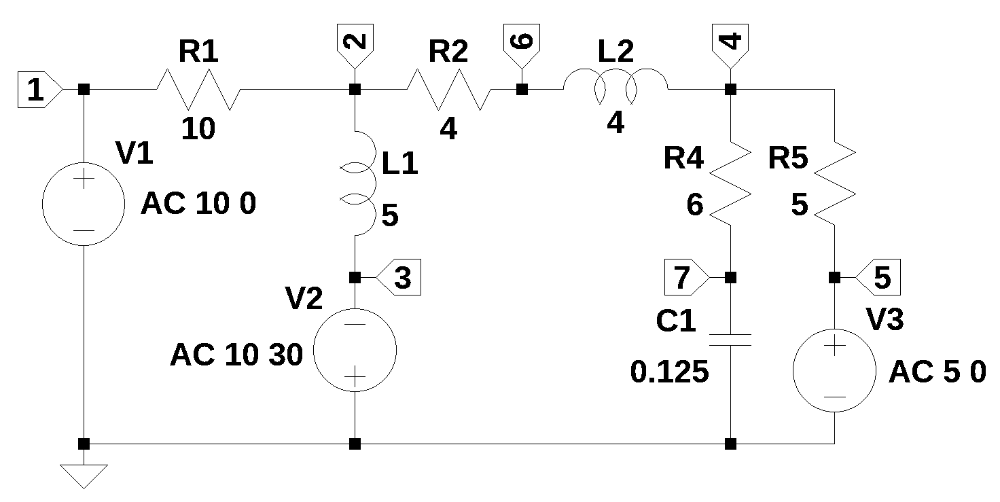

from sympy import *
import numpy as np
from tabulate import tabulate
import pandas as pd
import SymMNA
from IPython.display import display, Markdown, Math, Latex
init_printing()33 Phasor analysis

A question posted on Electronics Stackexchange by user69860 (2016) asked:
I have a circuit that I would like to convert into a conductance matrix for the node analysis by inspection method. I have, however, run into a problem. I have this 36V ideal voltage source with no resistance on its branch, which means that I cannot convert it into a current source with the Norton/Thenevin equivalent circuit theorem (or can I?). I have thought of making the third node connected to the voltage source dependent on the first node connected to the voltage source, i.e. v1 = v1 + 36. I have tried this method, but I do not get the correct values. Am I messing up? Is there no way to handle ideal voltage sources with the node analysis by inspection method?
The net list for Figure 5.1 was generated by LTSpice and show below:
V1 1 0 AC 10 0
V2 0 3 AC 10 30
V3 5 0 AC 5 0
R1 2 1 10
R2 4 2 4+j4
R3 3 2 j5
R4 0 4 6-j8
R5 5 4 5The following Python modules are used in this notebook.
In electrical engineering, sinusudial signals can be represented either by polar or rectangular notation. The function polar converts the polar representation, also called a phasor to rectangular notation and the second function converts rectangular notation to magnitude and phase.
def polar2rec(mag, ang, units='deg'):
''' polar to rectangular conversion
mag: float
magnitude of the time invarient sinusudial signal
ang: float
the angle of the time invarient sinusudial signal
units: string
if units is set to deg, and is in degrees not radians
returns: complex
rectangular corrdinates of voltage vector
'''
if units == 'deg':
ang = ang * np.pi / 180
return mag * np.exp(1j * ang)
def rec2polar(value):
'''rectangular to polar conversion
value: complex float
returns:
magnitude, phase (in degrees)
'''
return float(abs(value)), float(arg(value)*180/np.pi)33.0.1 Load the netlist
The netlist generated by LTSpice is pasted into the cell below and some edits were made to remove the inductor series resistance and the independent sources are set to their DC values.
componet values are set to 1, later to values used in the problem
net_list = '''
V1 1 0 1
V2 0 3 1
V3 5 0 1
R1 2 1 1
R2 4 2 1
R3 3 2 1
R4 0 4 1
R5 5 4 1
'''Generate the network equations.
report, network_df, df2, A, X, Z = SymMNA.smna(net_list)
# Put matricies into SymPy
X = Matrix(X)
Z = Matrix(Z)
NE_sym = Eq(A*X,Z)
# generate markdown text to display the network equations.
temp = ''
for i in range(len(X)):
temp += '${:s}$<br>'.format(latex(Eq((A*X)[i:i+1][0],Z[i])))
Markdown(temp)\(I_{V1} + \frac{v_{1}}{R_{1}} - \frac{v_{2}}{R_{1}} = 0\)
\(v_{2} \cdot \left(\frac{1}{R_{3}} + \frac{1}{R_{2}} + \frac{1}{R_{1}}\right) - \frac{v_{3}}{R_{3}} - \frac{v_{4}}{R_{2}} - \frac{v_{1}}{R_{1}} = 0\)
\(- I_{V2} - \frac{v_{2}}{R_{3}} + \frac{v_{3}}{R_{3}} = 0\)
\(v_{4} \cdot \left(\frac{1}{R_{5}} + \frac{1}{R_{4}} + \frac{1}{R_{2}}\right) - \frac{v_{5}}{R_{5}} - \frac{v_{2}}{R_{2}} = 0\)
\(I_{V3} - \frac{v_{4}}{R_{5}} + \frac{v_{5}}{R_{5}} = 0\)
\(v_{1} = V_{1}\)
\(- v_{3} = V_{2}\)
\(v_{5} = V_{3}\)
As shown above MNA generated many equations and these would be difficult to solve by hand and a symbolic soultion would take a lot of computing time. The equations are displace in matrix notation.
NE_sym\(\displaystyle \left[\begin{matrix}I_{V1} + \frac{v_{1}}{R_{1}} - \frac{v_{2}}{R_{1}}\\v_{2} \cdot \left(\frac{1}{R_{3}} + \frac{1}{R_{2}} + \frac{1}{R_{1}}\right) - \frac{v_{3}}{R_{3}} - \frac{v_{4}}{R_{2}} - \frac{v_{1}}{R_{1}}\\- I_{V2} - \frac{v_{2}}{R_{3}} + \frac{v_{3}}{R_{3}}\\v_{4} \cdot \left(\frac{1}{R_{5}} + \frac{1}{R_{4}} + \frac{1}{R_{2}}\right) - \frac{v_{5}}{R_{5}} - \frac{v_{2}}{R_{2}}\\I_{V3} - \frac{v_{4}}{R_{5}} + \frac{v_{5}}{R_{5}}\\v_{1}\\- v_{3}\\v_{5}\end{matrix}\right] = \left[\begin{matrix}0\\0\\0\\0\\0\\V_{1}\\V_{2}\\V_{3}\end{matrix}\right]\)
The sysmbols generated by the Python code are extraced by the SymPy function free_symbols and then declared as SymPy variables.
# turn the free symbols into SymPy variables
var(str(NE_sym.free_symbols).replace('{','').replace('}',''))\(\displaystyle \left( v_{5}, \ R_{2}, \ V_{3}, \ v_{4}, \ v_{3}, \ I_{V3}, \ R_{5}, \ V_{2}, \ V_{1}, \ R_{1}, \ R_{3}, \ I_{V1}, \ R_{4}, \ v_{2}, \ v_{1}, \ I_{V2}\right)\)
33.1 Symbolic solution
The newtork equations can be solved symbolically.
U_sym = solve(NE_sym,X)
# display the symbolic solution
temp = ''
for i in U_sym.keys():
temp += '${:s} = {:s}$<br>'.format(latex(i),latex(U_sym[i]))
Markdown(temp)\(v_{1} = V_{1}\)
\(v_{2} = \frac{- R_{1} R_{2} R_{4} V_{2} - R_{1} R_{2} R_{5} V_{2} + R_{1} R_{3} R_{4} V_{3} - R_{1} R_{4} R_{5} V_{2} + R_{2} R_{3} R_{4} V_{1} + R_{2} R_{3} R_{5} V_{1} + R_{3} R_{4} R_{5} V_{1}}{R_{1} R_{2} R_{4} + R_{1} R_{2} R_{5} + R_{1} R_{3} R_{4} + R_{1} R_{3} R_{5} + R_{1} R_{4} R_{5} + R_{2} R_{3} R_{4} + R_{2} R_{3} R_{5} + R_{3} R_{4} R_{5}}\)
\(v_{3} = - V_{2}\)
\(v_{4} = \frac{R_{1} R_{2} R_{4} V_{3} + R_{1} R_{3} R_{4} V_{3} - R_{1} R_{4} R_{5} V_{2} + R_{2} R_{3} R_{4} V_{3} + R_{3} R_{4} R_{5} V_{1}}{R_{1} R_{2} R_{4} + R_{1} R_{2} R_{5} + R_{1} R_{3} R_{4} + R_{1} R_{3} R_{5} + R_{1} R_{4} R_{5} + R_{2} R_{3} R_{4} + R_{2} R_{3} R_{5} + R_{3} R_{4} R_{5}}\)
\(v_{5} = V_{3}\)
\(I_{V1} = \frac{- R_{2} R_{4} V_{1} - R_{2} R_{4} V_{2} - R_{2} R_{5} V_{1} - R_{2} R_{5} V_{2} - R_{3} R_{4} V_{1} + R_{3} R_{4} V_{3} - R_{3} R_{5} V_{1} - R_{4} R_{5} V_{1} - R_{4} R_{5} V_{2}}{R_{1} R_{2} R_{4} + R_{1} R_{2} R_{5} + R_{1} R_{3} R_{4} + R_{1} R_{3} R_{5} + R_{1} R_{4} R_{5} + R_{2} R_{3} R_{4} + R_{2} R_{3} R_{5} + R_{3} R_{4} R_{5}}\)
\(I_{V2} = \frac{- R_{1} R_{4} V_{2} - R_{1} R_{4} V_{3} - R_{1} R_{5} V_{2} - R_{2} R_{4} V_{1} - R_{2} R_{4} V_{2} - R_{2} R_{5} V_{1} - R_{2} R_{5} V_{2} - R_{4} R_{5} V_{1} - R_{4} R_{5} V_{2}}{R_{1} R_{2} R_{4} + R_{1} R_{2} R_{5} + R_{1} R_{3} R_{4} + R_{1} R_{3} R_{5} + R_{1} R_{4} R_{5} + R_{2} R_{3} R_{4} + R_{2} R_{3} R_{5} + R_{3} R_{4} R_{5}}\)
\(I_{V3} = \frac{- R_{1} R_{2} V_{3} - R_{1} R_{3} V_{3} - R_{1} R_{4} V_{2} - R_{1} R_{4} V_{3} - R_{2} R_{3} V_{3} + R_{3} R_{4} V_{1} - R_{3} R_{4} V_{3}}{R_{1} R_{2} R_{4} + R_{1} R_{2} R_{5} + R_{1} R_{3} R_{4} + R_{1} R_{3} R_{5} + R_{1} R_{4} R_{5} + R_{2} R_{3} R_{4} + R_{2} R_{3} R_{5} + R_{3} R_{4} R_{5}}\)
33.2 Phasor analysis
element_values = SymMNA.get_part_values(network_df)
element_values\(\displaystyle \left\{ R_{1} : 1.0, \ R_{2} : 1.0, \ R_{3} : 1.0, \ R_{4} : 1.0, \ R_{5} : 1.0, \ V_{1} : 1.0, \ V_{2} : 1.0, \ V_{3} : 1.0\right\}\)
element_values[V1] = polar2rec(10, 0, units='deg')
element_values[V2] = polar2rec(10, 30, units='deg')
element_values[V3] = polar2rec(5, 0, units='deg')
element_values[R1] = 10
element_values[R2] = 4+4j
element_values[R3] = 5j
element_values[R4] = 6-8j
element_values[R5] = 5Solve equations for \(\omega\) equal to 1. Then display the network equations with numerical values.
NE = NE_sym.subs(element_values)
NE\(\displaystyle \left[\begin{matrix}I_{V1} + \frac{v_{1}}{10} - \frac{v_{2}}{10}\\- \frac{v_{1}}{10} + v_{2} \cdot \left(\frac{1}{10} - 0.2 i + 0.03125 \cdot \left(4.0 - 4.0 i\right)\right) + 0.2 i v_{3} - 0.03125 v_{4} \cdot \left(4.0 - 4.0 i\right)\\- I_{V2} + 0.2 i v_{2} - 0.2 i v_{3}\\- 0.03125 v_{2} \cdot \left(4.0 - 4.0 i\right) + v_{4} \cdot \left(\frac{1}{5} + 0.03125 \cdot \left(4.0 - 4.0 i\right) + 0.01 \cdot \left(6.0 + 8.0 i\right)\right) - \frac{v_{5}}{5}\\I_{V3} - \frac{v_{4}}{5} + \frac{v_{5}}{5}\\v_{1}\\- v_{3}\\v_{5}\end{matrix}\right] = \left[\begin{matrix}0\\0\\0\\0\\0\\10.0\\8.66025403784439 + 5.0 i\\5.0\end{matrix}\right]\)
Solve the network equations and display the results.
U = solve(NE,X)
table_header = ['unknown', 'mag','phase, deg']
table_row = []
for name, value in U.items():
table_row.append([str(name),float(abs(value)),float(arg(value)*180/np.pi)])
print(tabulate(table_row, headers=table_header,colalign = ('left','decimal','decimal'),tablefmt="simple",floatfmt=('5s','.6f','.6f')))unknown mag phase, deg
--------- --------- ------------
v1 10.000000 0.000000
v2 4.574219 124.771754
v3 10.000000 -150.000000
v4 3.594255 41.498814
v5 5.000000 0.000000
I_V1 1.315666 163.405921
I_V2 2.128974 145.354766
I_V3 0.663289 134.101376The LTSpice circuit was re-drawn with the components indicated. Inductor series resistance was set to zero.

V1 1 0 AC 10 0
V2 0 3 AC 10 30
V3 5 0 AC 5 0
R1 2 1 10
R2 6 2 4
R4 7 4 6
R5 5 4 5
L1 2 3 5 Rser=0
L2 6 4 4 Rser=0
C1 7 0 0.125 --- AC Analysis ---
frequency: 0.159155 Hz
V(1): mag: 10 phase: -2.54444e-15 voltage
V(3): mag: 10 phase: -150 voltage
V(5): mag: 5 phase: -5.08889e-15 voltage
V(2): mag: 4.57422 phase: 124.772 voltage
V(6): mag: 0.770294 phase: 147.035 voltage
V(7): mag: 2.8754 phase: 4.62894 voltage
V(4): mag: 3.59425 phase: 41.4988 voltage
I(C1): mag: 0.359425 phase: 94.6289 device_current
I(L1): mag: 2.12897 phase: -34.6452 device_current
I(L2): mag: 0.968091 phase: 120.45 device_current
I(R1): mag: 1.31567 phase: 163.406 device_current
I(R2): mag: 0.968091 phase: -59.5504 device_current
I(R4): mag: 0.359425 phase: -85.3711 device_current
I(R5): mag: 0.663289 phase: -45.8986 device_current
I(V1): mag: 1.31567 phase: 163.406 device_current
I(V2): mag: 2.12897 phase: 145.355 device_current
I(V3): mag: 0.663289 phase: 134.101 device_current